Karty wspomnień · Sojowy Świat Zaproszeń
Karty wspomnień
Karty wspomnień
stworzone po Waszemu
Każdy projekt tworzymy indywidualnie. Wspólnie ustalamy wygląd, materiały i szczegóły, aby pasował do Waszych potrzeb i okazji.
Zobacz inspiracje ↓ Zapytaj o projekt
Przykładowe kierunki
Inspiracje do Waszego projektu
Każdy projekt przygotowuję indywidualnie. Wspólnie dobieramy styl, kolory i szczegóły.
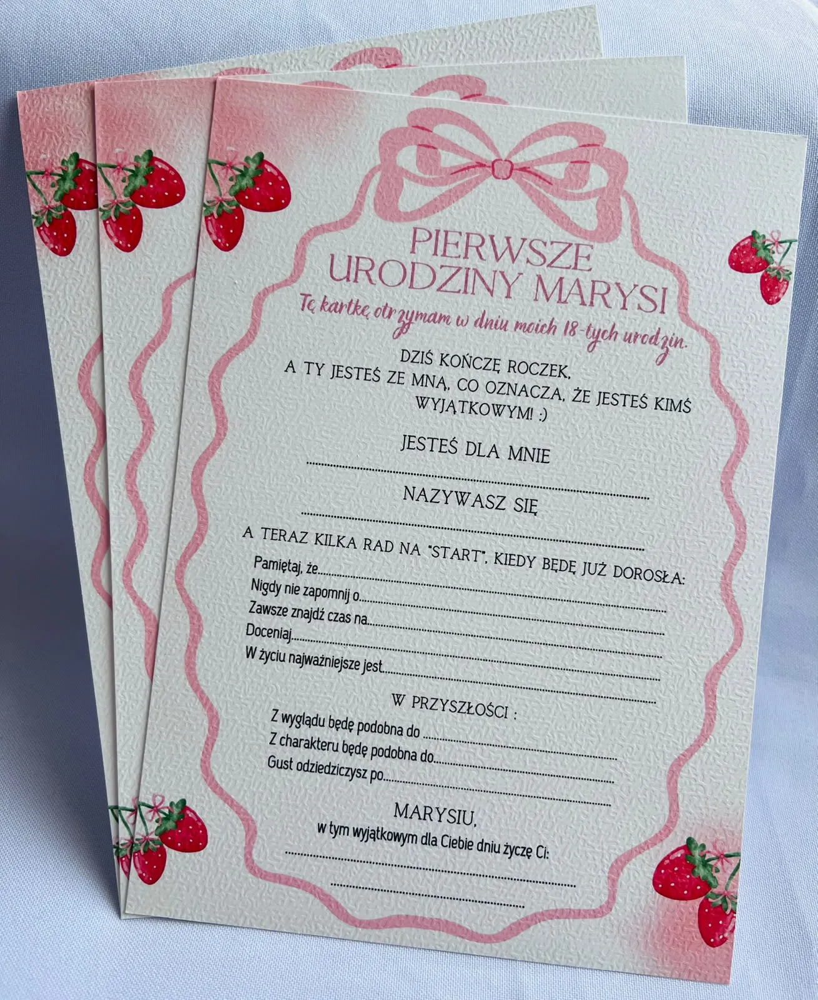
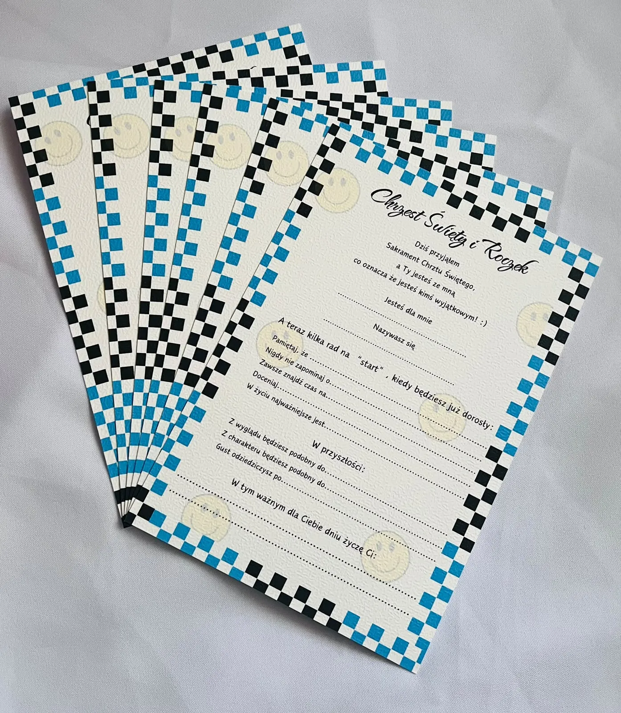
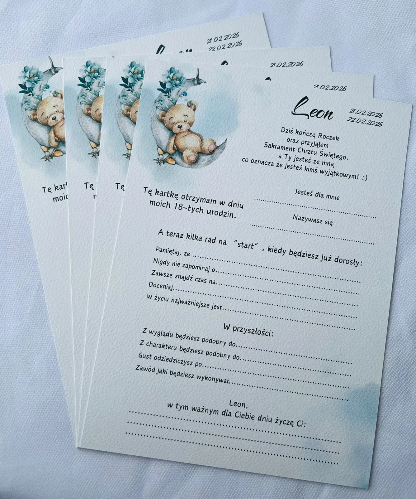
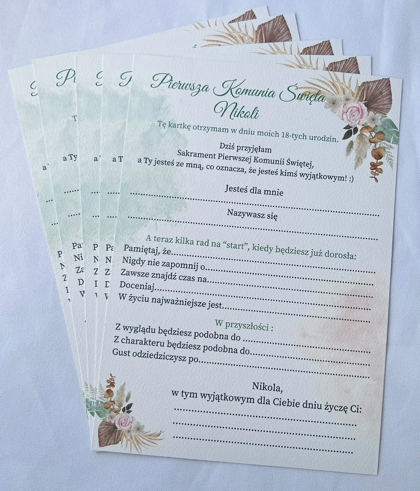
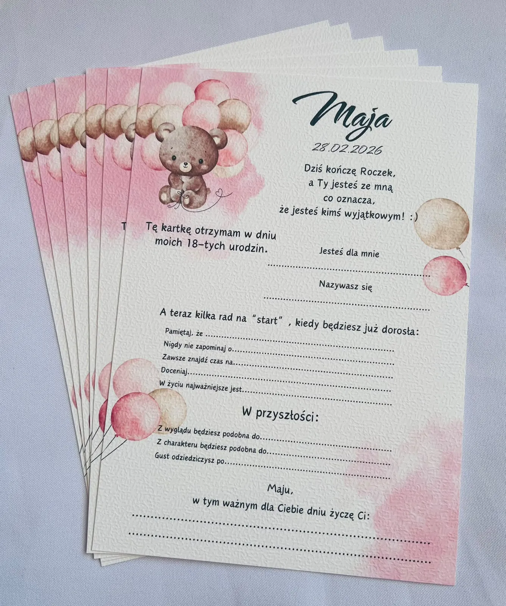
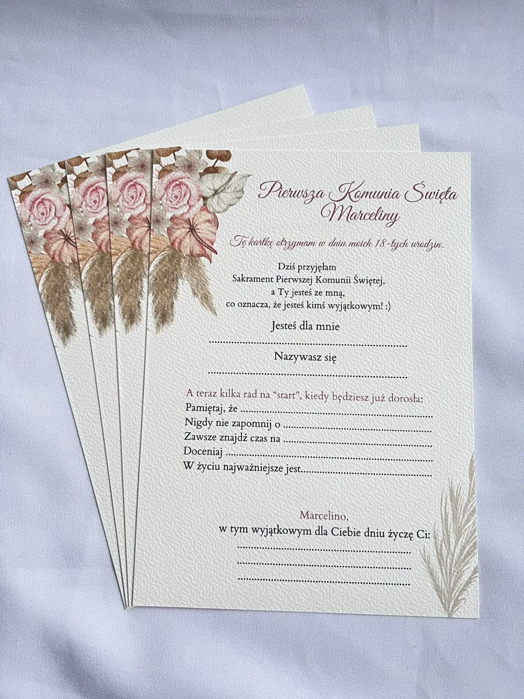
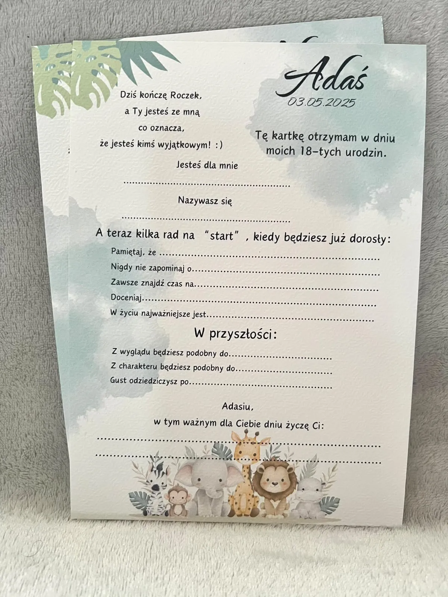
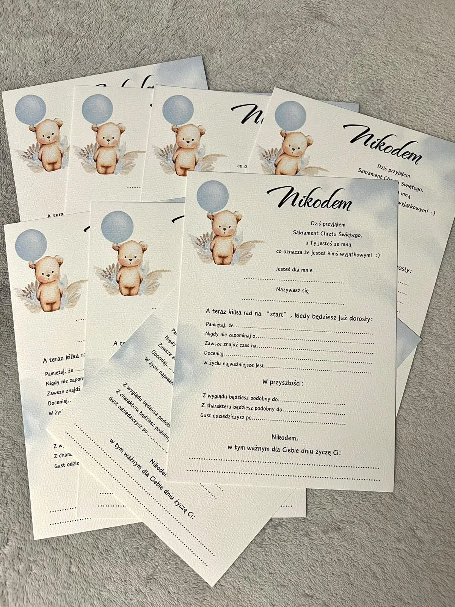
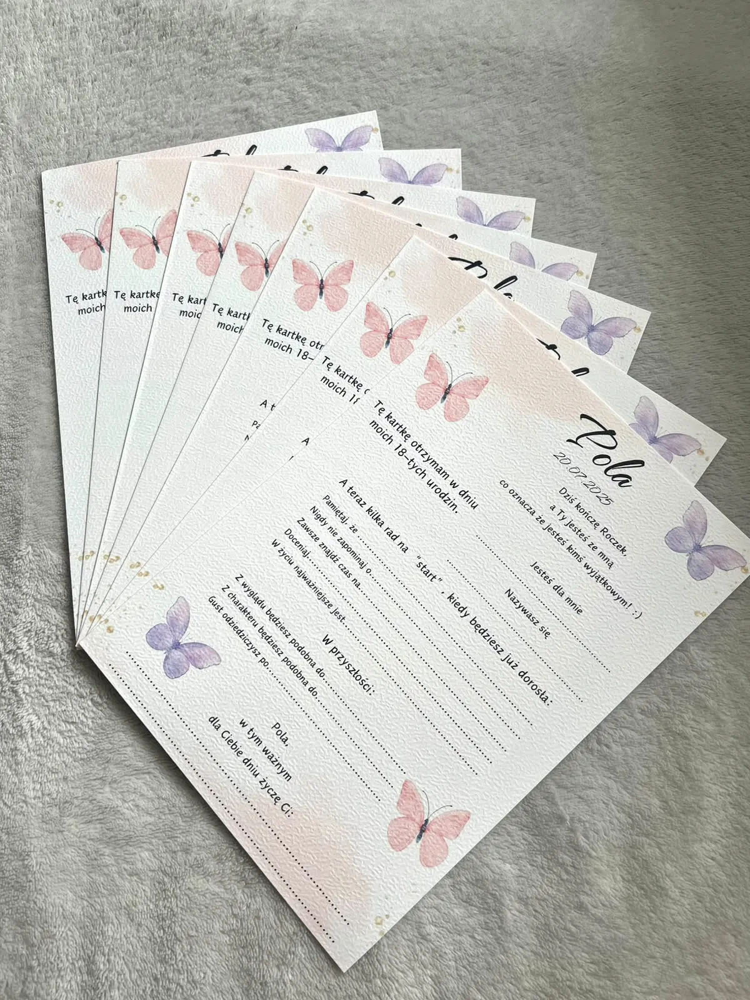
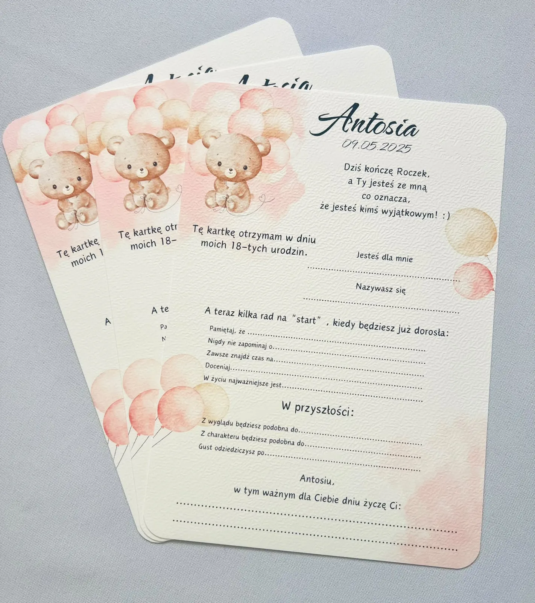
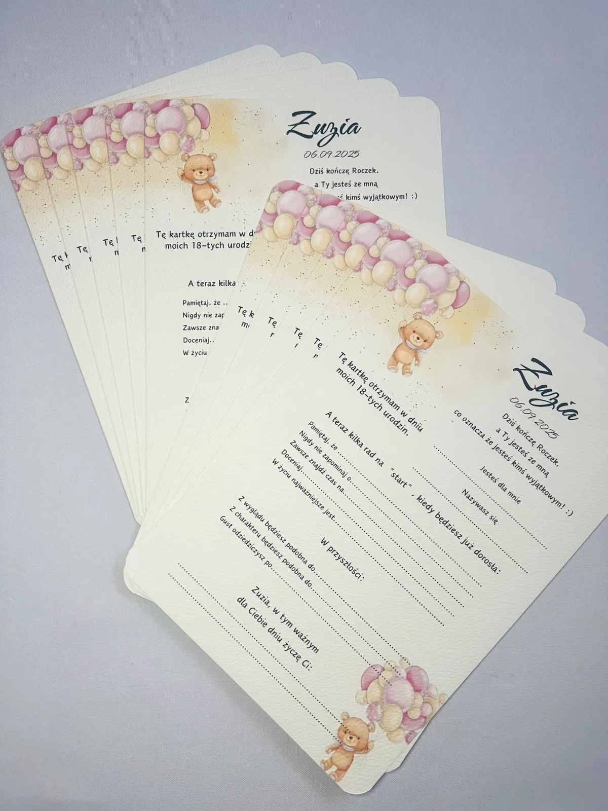
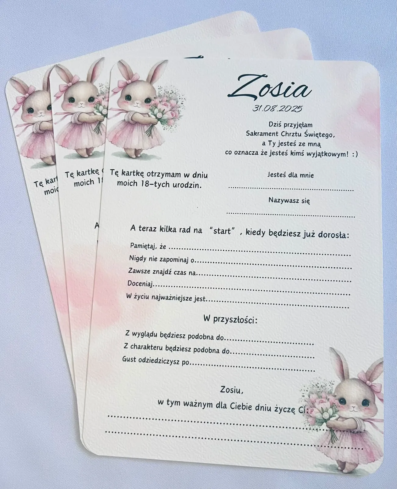
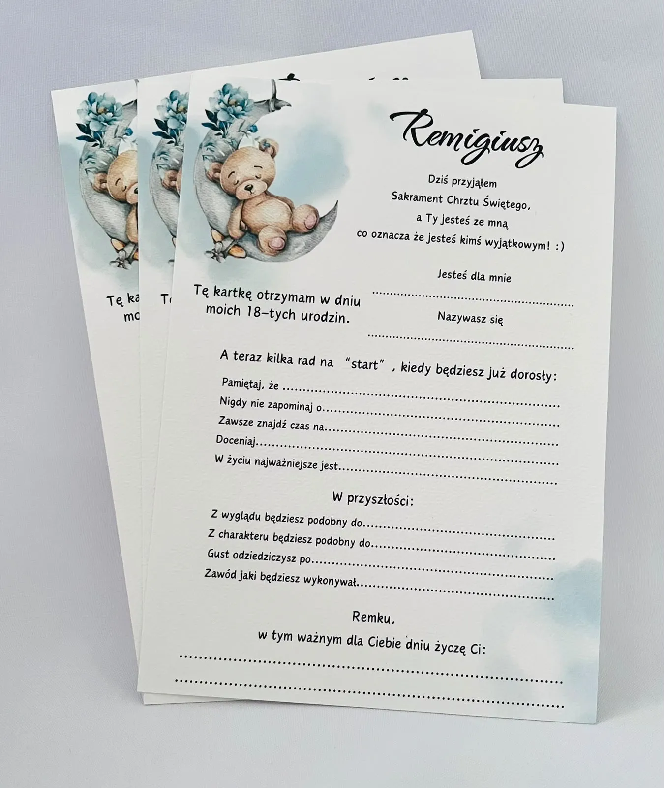
Każdy detal ustalamy razem
Karty wspomnień przygotowuję specjalnie dla Was. Pokazane inspiracje to punkt wyjścia — treść, kolorystykę, formę i ilość omawiamy przed realizacją.